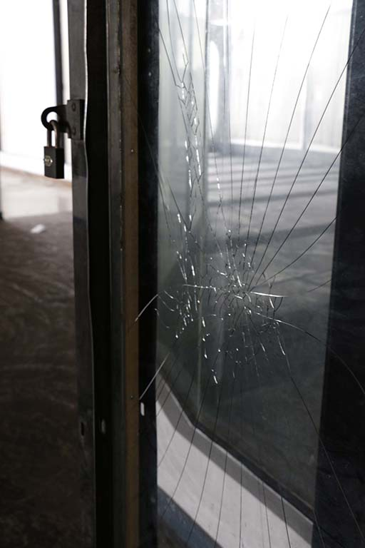

Consumed by
Consumerism
This was a public intervention that was created for a project for Vega in the year 2014. The location in the Werdmuller Centre, an abandoned mall, located in Claremont. This project shows how society is so consumed by the nature of consumerism and how quickly it can be forgotten and left behind.

